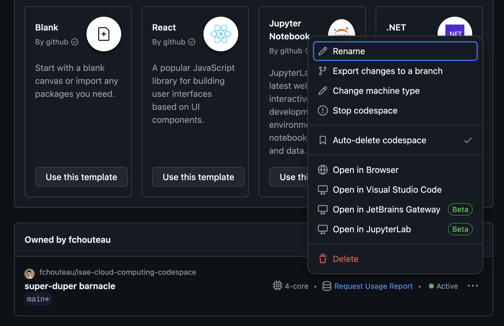
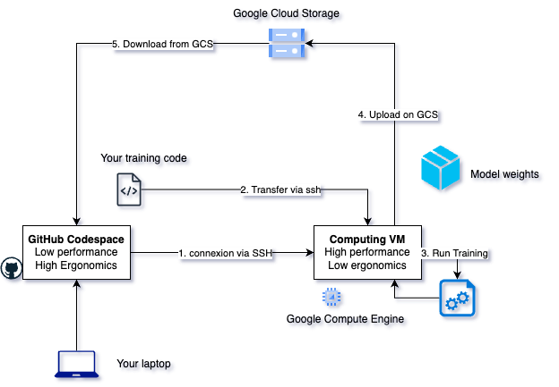

Google Cloud Platform Hands-on🔗
0. Abstract🔗
Abstract
In this hands on you will configure your GCP account, the google cloud SDK and access the cloud console using Google Cloud Shell, You will also discover a very useful tool, a managed jupyter notebook service from google named Google Colab which may be very important for your future developments this year
Warning
Some things may only work on eduroam or in 4G...
Warning
Don't forget to shutdown everything when you're done since it costs you money. At the end, even if you have not finished the TP, go to the section 8 "Cleaning Up"
Tip
When the TP says to replace "{something}" with a name, don't include the brackets so write “yourname"
Tip
If you are lost on where you are, normally the terminal has the hostname indicated, otherwise run the command hostname
1. Create your GCP Account🔗
Note
You should have already done that last week
Here you will each create a Google Cloud Platform account and project using the student credits given this year,
- Create an account within Google cloud Platform using your ISAE e-mail
- Use the code given by Dennis to redeem your free credits
- You should have a free tier available to you as well as coupons
- From the interface you should create a project with a name of your choice (it is recommended to put for example sdd2425-yourname so that it is clear)
2. (re)connect to GitHub Codespaces🔗
If you still have your codespace from last time🔗
If you go to the core page of https://github.com/codespaces and you see an existing codespace from last week, you can restart it using the (...) menu

If you don't have one, recreate it (see below)
Create your codespace and connect to it🔗
Go to https://github.com/fchouteau/isae-cloud-computing-codespace

- Click on the top left corner for a new codespace
- It should launch a browser with a vscode
- Launch a terminal using the top right menu
If that does not work, go to https://github.com/github/codespaces-blank and create a codespace from there

You should arrive to a VScode instance

If you go to the core page of https://github.com/codespaces you should see your codespace running

3. Install Google Cloud SDK & Configure the shell🔗
If you want to interact with GCP from your computer or codespaces, you will need to install the Google Cloud SDK, which will also install a shell if you are on windows
Warning
If you have a codespace cloned from mine, the google cloud sdk is already installed. Try gcloudto check that, and skip this if this returns something
Note
You can install the cloud shell locally, but I recommend using your codespace
Installing locally
The best ways to interact with google cloud SDK is with a terminal so in that order:
- Ubuntu / Debian https://cloud.google.com/sdk/docs/install#deb
- Other Linux (either VM or native): https://cloud.google.com/sdk/docs/install#linux
- MacOS: https://cloud.google.com/sdk/docs/install#mac
- Windows Subsystem for Linux: see Linux
- Windows: https://cloud.google.com/sdk/docs/install#windows
Installing on codespace
If you are on codespace, run the commands below to install the gcloud tool to your machine
Note : If you used the custom codespace, it should already be installed, try gcloud init directly
echo "deb https://packages.cloud.google.com/apt cloud-sdk main" | sudo tee -a /etc/apt/sources.list.d/google-cloud-sdk.list
curl https://packages.cloud.google.com/apt/doc/apt-key.gpg | sudo apt-key add -
sudo apt-get update && sudo apt-get install google-cloud-cli
Then run gcloud init in your terminal to configure the google cloud sdk with your account
You should at some point see at terminal with a link. Click on the link and login with your google accound, then copy the token to your codespace.

Your github codespace is now configured with your google cloud platform credentials
4. My first Google Compute Engine Instance🔗
First, we will make our first steps by creating a compute engine instance (a vm) using the console, connecting to it via SSH, interacting with it, uploading some files, and we will shut it down and make the magic happen by resizing it
- What is google cloud compute engine ? try to describe it with your own words
4a. Creating my VM using the console (the GUI)🔗
-
Create your VM from the google cloud interface : Go to this link and follow the "CONSOLE" instruction
-
Create an instance with the following parameters
- type: n1-standard-1
- zone: europe-west1-b (Belgium)
- os: ubuntu 22.04 x86
- boot disk size: 10 Gb
- boot disk type: pd-standard
- Give it a name of your choice (that you can remember)
- DO NOT SHUT IT DOWN for now
Note
If you were using the command line, you would have done this
gcloud compute instances create {name} --project={your-project} --zone={your-zone} \
--machine-type=n1-standard-1 \
--image=ubuntu-2204-jammy-v20231030 \
--image-project=ubuntu-os-cloud
--create-disk=auto-delete=yes,boot=yes,device-name=dev-instance-{index},image=projects/ubuntu-os-cloud/global/images/ubuntu-2204-jammy-v20231030,mode=rw,size=10,type=projects/sdd2324/zones/{your-zone}/diskTypes/pd-standard \
4b. Connecting to SSH🔗
-
Connect to ssh from the github codespace
Solution
gcloud compute ssh ${MACHINE-NAME}Note
We are using
google compute sshinstead of ssh. This is an automated tool that takes care of locating your machine in GCP and transferring the keys -
Check available disk space
Solution
df -h -
Check the OS name
Solution
cat /etc/os-release -
Check the CPU model
Solution
cat /proc/cpuinfo -
Check the number of cores available and the RAM
Solution
htop
4c. The magic of redimensioning VMs🔗
- Shutdown the VM (from the web browser), check the previous codelab to see how to do it
- Select it and click on EDIT
- Change the machine type to
n1-standard-2(link to documentation) - Relaunch it, reconnect to it and try to check using
htopthe number of cores & RAM available - Note : If you run
cat /proc/cpuinfoagain you will see that you are running on the same hardware !
Magic isn't it ?
Note: If you had any files and specific configuration, they would still be here !
4d. Transfering files from the computer (or codespaces) to this machine🔗
- We will use the terminal to transfer some files from* your computer (or codespaces) to** this machine,
-
If you use cloud shell you can do it as well : create a dummy file in cloud shell
-
Follow this link to learn how to use the gcloud cli tool to transfer files to your instance TOC
-
For experts, it's possible to do it manually using rsync from ssh or scp
-
Transfer some files to your
/home/${USER}directory -
List them from your instance (
ls)
How do we do the opposite ?
See section 5.
4e. Persistent SSH sessions with TMUX🔗
- Connect to your GCE instance using SSH from the codespace
- Question: What happens if you start a long computation and disconnect ?
- Check that tmux is installed on the remote instance (run
tmux). if not install it - Follow this tutorial: https://www.hamvocke.com/blog/a-quick-and-easy-guide-to-tmux/
- To check you have understood you should be able to:
- Connect to your remote instance with ssh
- Start a tmux session
- Launch a process (for example
htop) inside it - Detach from the session (
CTRL+Bthen type:detach) - Kill the ssh connection
- Connect again
tmux attachto your session- Your process should still be here !
Congratulations :)
5. Interacting with Google Cloud Storage🔗
Here we will discover google cloud storage, upload some files from your computer and download them from your instance in the cloud
-
What is Google Cloud Storage ? Try to describe it with your own words
-
Use this tutorial to upload something from your computer to google cloud storage from the web browser (DO NOT DELETE THE FILES YET)
Now we will download it using the google cloud CLI tool. Here's the documentation
Follow the tutorial to learn how to do what you just did, but this time using gsutil from your codespace
- List the content of the bucket you just created (if you deleted it previously, create a new one)
- Upload a file to a bucket
- Download a file from a bucket
Optional : What if we want to do the same from the GCE instance ?
-
Now go back to your machine
-
Try to list bucket, download and upload files
-
Is it possible ?
-
If not, it's because you have to allow the instance to access google cloud storage
-
Shutdown the VM and edit it (like we did when we resized the instance)
-
Check "access scopes", select "set access for each api", and select "storage / admin"
-
Now restart you machine, connect back to it. You should be able to upload to google cloud storage now files now
-
You can delete the VM as well, we will not use it
6. Deep Learning VM, SSH and Port Forwarding🔗
6a. deep learning vm🔗
Here we will use the google cloud sdk to create a more complex VM with a pre-installed image and connect to its jupyter server
Google Cloud Platform comes with a set of services targeted at data scientists called AI Platform, among them are Deep Learning VMs which are essentially preinstalled VMs (more or less the same configuration as google colab) with some bonuses.
- What are "Deep Learning VMs" ? Try to use your own words
- What would be the alternative if you wanted to get a machine with the same installation ?
6b. create a google compute engine instance using the command line🔗
Instead of using the browser to create this machine, we will be using the CLI to create instances
export INSTANCE_NAME="fch-dlvm-1" # <--- RENAME THIS !!!!!!!!!!
gcloud compute instances create $INSTANCE_NAME \
--zone="europe-west1-b" \
--image-family="common-cpu" \
--image-project="deeplearning-platform-release" \
--maintenance-policy="TERMINATE" \
--scopes="storage-rw" \
--machine-type="n1-standard-1" \
--boot-disk-size="50GB" \
--boot-disk-type="pd-standard"
- Notice the similarities between the first VM you created and this one,
- What changed ?
- If you want to learn more about compute images, image families etc... go here
6c. connect with ssh to this machine with port forwarding🔗
-
Connect to your instance using the gcloud cli & ssh from the codespace with port forwarding
-
Forward the port 8888 when you're connecting to the instance
-
Documentation forward some ports as well
Solution
gcloud compute ssh user@machine-name --zone=europe-west1-b -- -L 8888:localhost:8888
If you are in codespace, use the port forwarding utility, add a new port (8888). It may be done automatically.
-
Explore the machine the same way we did previously
-
You can see you have a conda envirnoment installed. Try to query the list of things installed
Solution
conda list
pip list
- is (py)torch installed ? If not, install it
Solution
pip list | grep torch
pip3 install torch torchvision torchaudio --index-url https://download.pytorch.org/whl/cpu
6d. Run jupyter lab on the GCE VM🔗
-
In the GCE VM, run
jupyter lab -
Copy the credentials
-
Connect to the port 8888 of the GitHub CodeSpace. You should be redirected to a jupyter instance
Question
Where are we ? Where is the jupyter lab hosted ? What is the difference between this and the jupyter lab we launched from codespace last week ?

Don't disconnect from the VM, we will continue below
7. End to end example🔗
We will replicate the following setup (simplified)

- Your development machine (the github codespace) has some training code
- You have a "high performance" machine in the cloud
- You want to transfer the training code to the VM
- You want to run the training in a remote machine
-
Once the training is done you want to upload the model weights to google cloud storage
-
In your codespace, in a new folder (eg.
training), copy the content of this
Solution
gcloud compute scp --recurse training ${USER}@{MACHINE}:/home/${USER}/
You should find it on your GCE VM
- Run it using
python train.py --epochs 1 --save-model.
It should train a neural network on the MNIST dataset. BONUS : Run it inside a tmux session ;)
-
Once it has finished, you should see a new file, the model weights
mnist_cnn.pt -
From the GCE VM : Upload the weights to the google cloud storage bucket you previously created
Solution
gcloud storage cp mnist_cnn.pt gs://(...)
- From the GitHubCodespace : Download the model weights from google cloud storage
Solution
gcloud storage cp gs://(...) mnist_cnn.pt
Success
yay ! Don't forget to cleanup
8. IMPORTANT : Cleaning up🔗
Warning
- DELETE ALL THE BUCKES YOU CREATED
- DELETE ALL THE GCP INSTANCES YOU CREATED
- SHUTDOWN YOUR CODESPACE
How to shutdown codespaces :

- Click on stop codespace to shut it down (you "pay" for the disk with your free credits)
- Click on kill codespace to delete it
9. Optional - Introduction to infrastructure as code🔗
-
This tutorial will guide you through google cloud deployment manager, which is a way to deploy google compute engine instances using configuration files
-
Don't forget to adapt machine configurations and zone to your use case (see above)
If you run this, don't forget to clean everything up afterwards
10. Optional - Managed Database🔗
-
I think you've just done a class on SQL databases
-
Here are the managed SQL services of google cloud
Question
Can you describe what it is ? What do you pay to google ? How much does it cost ? What is a managed service in cloud vocabulary ?
- If you still have some code to interact with a database, you can try launching one here and redoing your classes